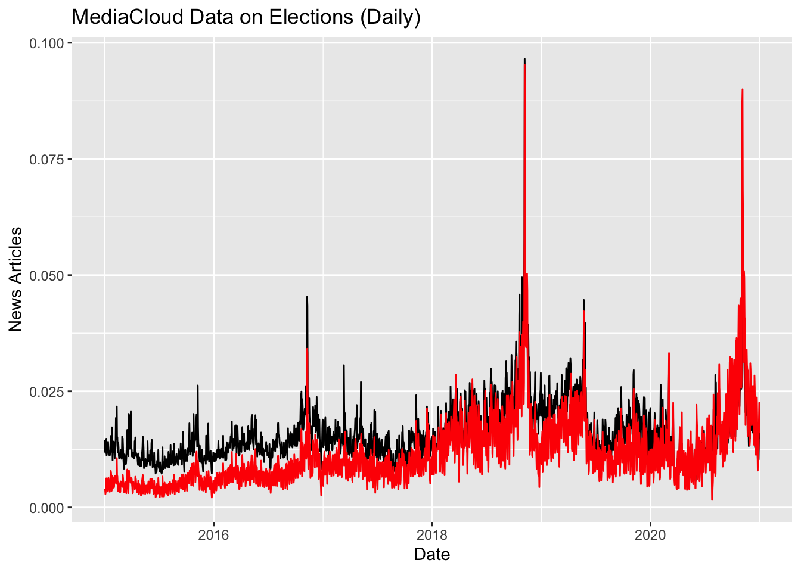
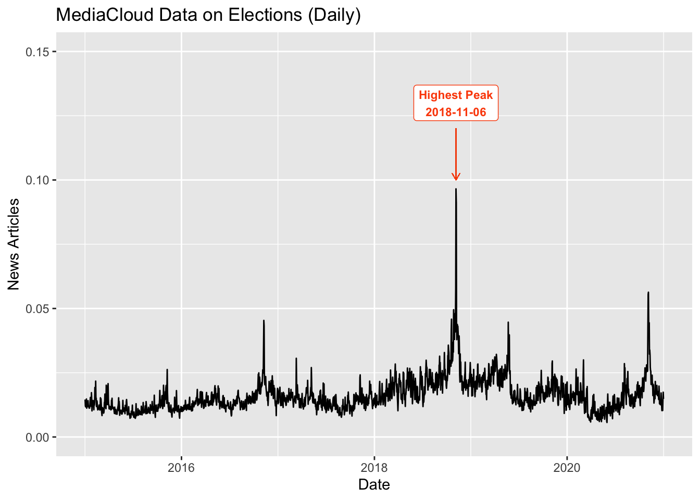
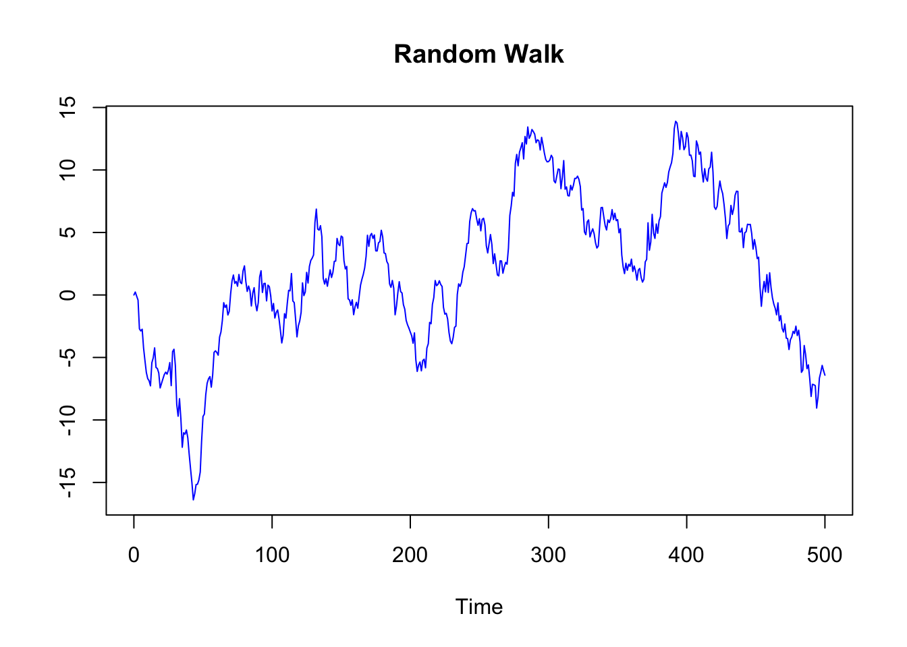
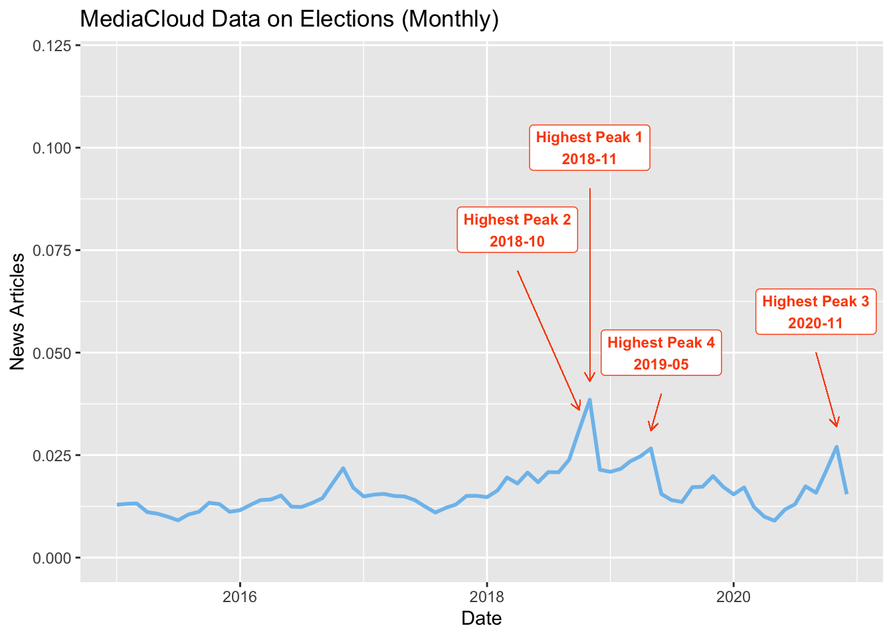
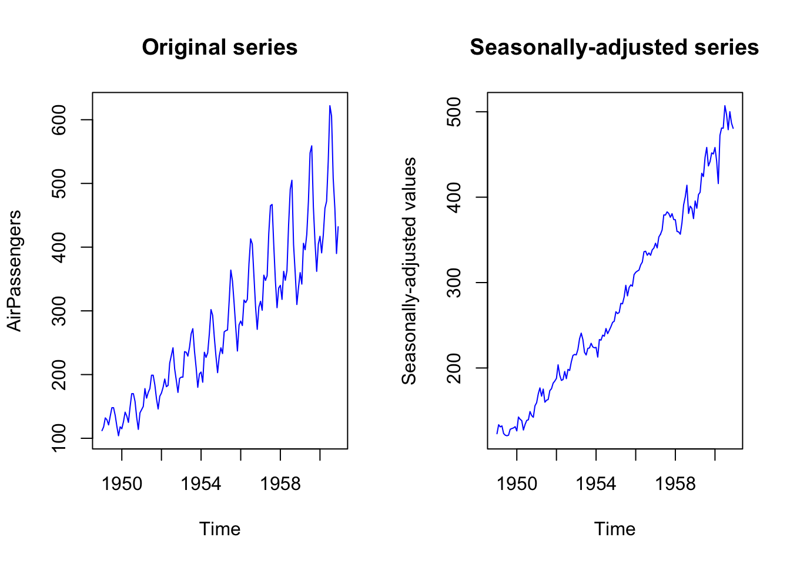
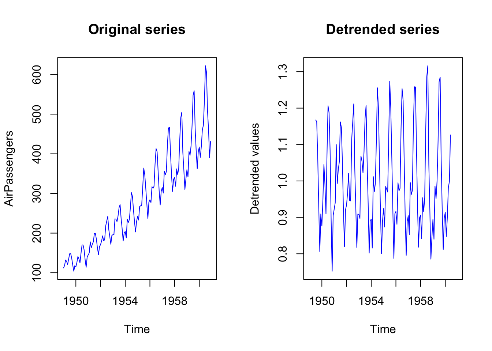
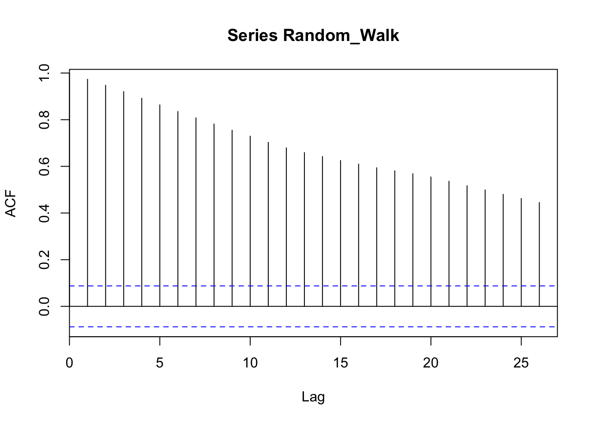
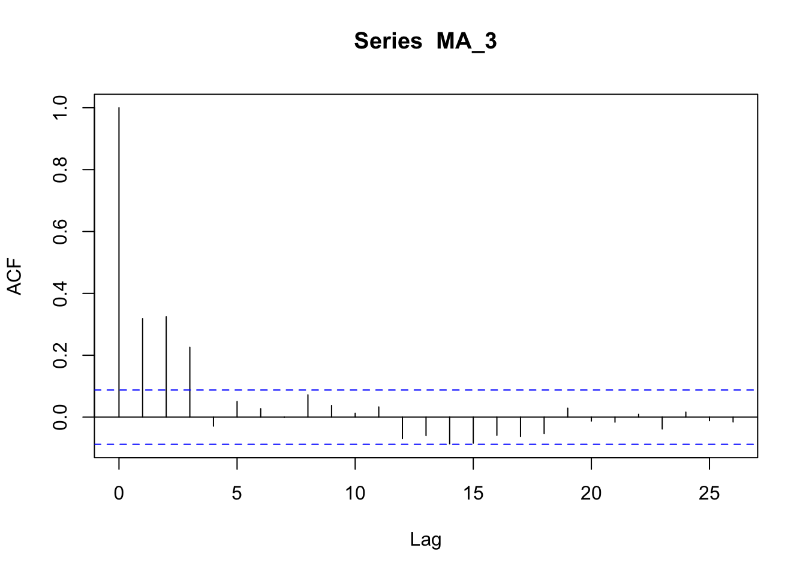
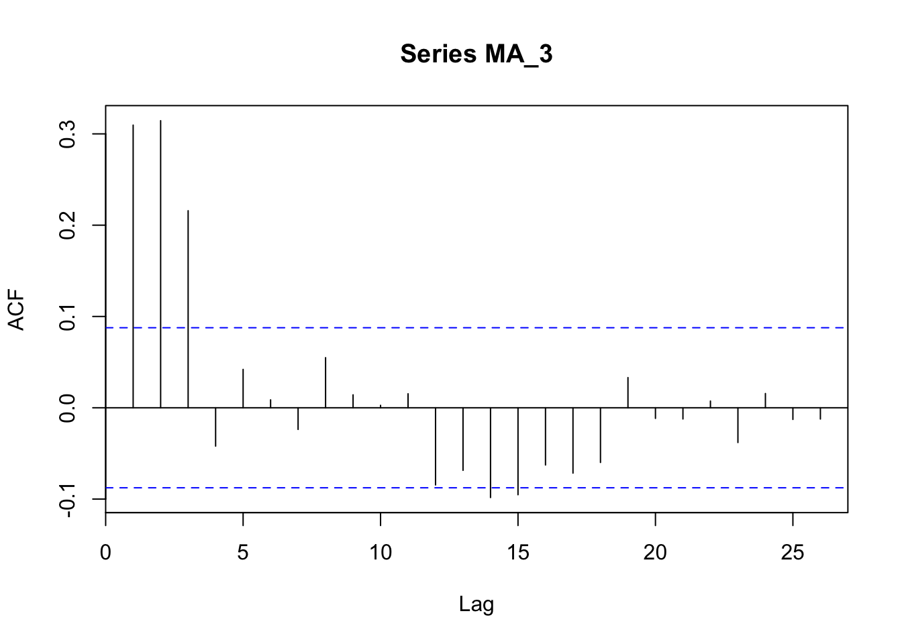
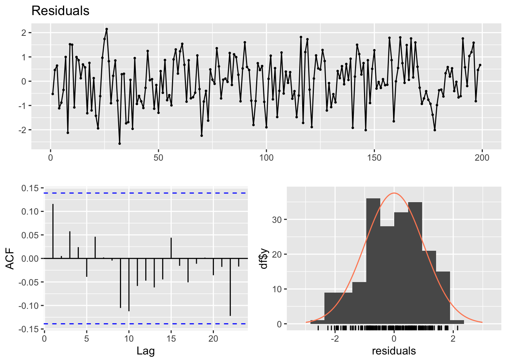

Chapter 6 Plot Time Series
6.1 Plot Time Series Objects
In this lecture we are going to learn how to plot time series data.
We will take into account three main functions: ggplot from the tidyverse library, plot.ts from base R, and plot.xts from the xts library. Ggplot is probably the most versatile function from the perspective of the graphical results that can be obtained, but also the more complex, while for ordinary visualization, plot.ts is probably the easiest tool.
Plotting time series is an important part of the analysis because it permits to visualize and explore the data, both from a univariate perspective (focusing on the characteristics of a single time series) and from a multivariate perspective (focusing on the characteristics of many time series, and on the relations between them). To visualize and explore the relations between time series, we’ll learn to plot a single time series as well as many different time series at once.
6.2 plot.ts
You can visualize a time series by using the function plot.ts() applied to a time series data in a ts format.
An example of ts time series is provided by the AirPassengers dataset, already included in R (you can load the data by running data(“AirPassengers”)).

You can add many details to your plot, such as a title, a label for the y axis and for the x axis, change the colors of the plot (use colors() to see the list of standard colors in R), and the size of the line.
plot.ts(AirPassengers,
main = "PASSENGERS",
xlab = "1949-1960 (monthly data)",
ylab = "Passengers (1000's)",
col = "violetred3",
lwd=5)
You can use plot.ts to plot two (or more) time series together, a useful operation to take a look at their relations. The different time series must have the same structure (the same starting date, the same ending date, and the same frequency) and are stored in the same ts object.
To merge in one “ts” object two or more time series already in the ts format, you can employ the function ts.union(). You can plot both the time series in the same plot, or create two different plots, by using the option “plot.type” and specifying single or multiple.
With lwd you control the line width (or the line size):
- Line types can either be specified as an integer (0=blank, 1=solid (default), 2=dashed, 3=dotted, 4=dotdash, 5=longdash, 6=twodash) or as one of the character strings “blank”, “solid”, “dashed”, “dotted”, “dotdash”, “longdash”, or “twodash”, where “blank” uses ‘invisible lines’ (i.e., does not draw them).
With lty you control the line type:
- The line width, a positive number, defaulting to 1. The interpretation is device-specific, and some devices do not implement line widths less than one. (See the help on the device for details of the interpretation.)
# create a "toy" time series with the same lenght of the AirPassenger one
AirPassengers_2 <- AirPassengers + 100
AirPassengers_3 <- AirPassengers + 300
AirPassengers_multi <- ts.union(AirPassengers, AirPassengers_2, AirPassengers_3)
plot.ts(AirPassengers_multi,
main = "Three time series",
xlab = "TIME", ylab = "VALUES",
col = c("blue", "red", "black"),
lwd=c(1, 1, 1), lty=c(1, 2, 3),
plot.type = "single")
plot.ts(AirPassengers_multi,
main = "Three time series",
xlab = "TIME", ylab = "VALUES",
col = "blue",
lwd=4,
plot.type = "multiple")
With the parameter nc you can control the number of columns used to display the data.
plot.ts(AirPassengers_multi,
main = "Three time series",
xlab = "TIME", ylab = "VALUES",
col = "orange",
lwd=4,
plot.type = "multiple",
nc=3)
To explore long time series it can be useful to focus on a limited time window. To do that, you can subset the data by using the function window. It is a function which extracts the subset of the object observed between the times start and end, which you need to specified. You can use the function window in the plot.ts function (alternatively, you can create a new object by applying the function window first, and the plot the new object).
plot.ts(window(AirPassengers, start=c(1950, 01), end=c(1954, 12)),
main = "PASSENGERS (1950-1955)",
xlab = "1950-1955 (monthly data)",
ylab = "Passengers (1000's)",
col = "violetred3",
lwd=5)
In the window function, you can also specify a frequency, and the series is then re-sampled at the new frequency. For instance, by re-sampling at quarterly frequency, the function keeps the observations made on January, April, July, and October, and by re-sampling at a six-month frequency, it keeps the observations made on January and July.
plot.ts(window(AirPassengers, start=c(1950, 01), end=c(1954,12), frequency = 4),
main = "PASSENGERS (1950-1955) - QUARTERLY DATA",
xlab = "1950-1955 (Quarterly data)",
ylab = "Passengers (1000's)",
col = "violetred3",
lwd=5)
You can use the window function also with more than one time series.
plot.ts(window(AirPassengers_multi, start=c(1950, 01), end=c(1954,12), frequency = 4),
main = "PASSENGERS (1950-1955) - QUARTERLY DATA",
xlab = "1950-1955 (Quarterly data)",
ylab = "Passengers (1000's)",
col = "violetred3",
lwd=5)To learn something more about the graphical options made available by plot.ts, you can open and read the help page by using ?plot.ts. The question mark followed by the name of a function opens the help page of that function.
6.3 plot.xts
To plot a xts object we can similarly use the plot.xts function.
You can create an xts object with the xts function (see the previous chapter), but if you already have a ts object, you can also convert it to a xts object by using the function as.xts
AirPassengers_xts <- as.xts(AirPassengers)
plot.xts(AirPassengers_xts,
main = "PASSENGERS",
ylab = "Passengers (1000's)",
col = "steelblue2",
lwd=5)
By using multi.panel=TRUE, or multi.panel=FALSE you can plot all the time series in the same panel or using different panels.
AirPassengers_multi_xts <- as.xts(AirPassengers_multi)
plot.xts(AirPassengers_multi_xts,
main = "PASSENGERS",
ylab = "Passengers (1000's)",
lwd=5, lty=1,
col = c("blue", "orange", "black"),
multi.panel = T)
plot.xts(AirPassengers_multi_xts,
main = "PASSENGERS",
ylab = "Passengers (1000's)",
lwd=5, lty=1,
col = c("blue", "orange", "black"),
multi.panel = F)
To subset the data, in order to visualize and focus on just one part of the series, instead of the function window, you have to write the dates into squared brackets as in the examples below.
plot.xts(AirPassengers_multi_xts["1950-01/1954-12"],
main = "PASSENGERS",
ylab = "Passengers (1000's)",
lwd=5, lty=1,
col = c("blue", "orange", "black"),
multi.panel = F)
plot.xts(AirPassengers_xts["1950-01/1956-06"],
main = "PASSENGERS",
ylab = "Passengers (1000's)",
lwd=5, lty=1,
col = c("blue", "orange", "black"),
multi.panel = F)
You can also change the frequency of the observations by using specific functions in the xts library.
With periodicity you can find the frequency of the time series.
## Monthly periodicity from Jan 1949 to Dec 1960With the function to.period you can re-sample the data to “seconds”, “minutes”, “hours”, “days”, “weeks”, “months”, “quarters”, and “years”. You can only re-sample the data from a higher to a lower frequency, but not from a lower to a higher one. For instance, if you have monthly data, you can aggregate the data in quarterly or yearly data, but you cannot create a weekly or hourly time series.
The result of the to.period function will contain the open (first) and close (last) value for the given period, as well as the maximum and minimum over the new period, reflected in the new high and low, respectively.
## AirPassengers_xts.Open AirPassengers_xts.High AirPassengers_xts.Low
## Dec 1949 112 148 104
## Dec 1950 115 170 114
## Dec 1951 145 199 145
## Dec 1952 171 242 171
## Dec 1953 196 272 180
## Dec 1954 204 302 188
## Dec 1955 242 364 233
## Dec 1956 284 413 271
## Dec 1957 315 467 301
## Dec 1958 340 505 310
## Dec 1959 360 559 342
## Dec 1960 417 622 390
## AirPassengers_xts.Close
## Dec 1949 118
## Dec 1950 140
## Dec 1951 166
## Dec 1952 194
## Dec 1953 201
## Dec 1954 229
## Dec 1955 278
## Dec 1956 306
## Dec 1957 336
## Dec 1958 337
## Dec 1959 405
## Dec 1960 432You can plot all the values, or select a value by using the square brackets with a comma, followed by the number of the column you want to plot (see the table above, with 4 columns). This notation is a way to access the columns (and the rows) of a data.frame or matrix. You write the name of the data.frame or the matrix, and the squared brackets indicate the index of the rows, in the first position before the comma, and the index of the columns, in the second position, after the comma. So, for instance, to access the value in the second column and the second row of the data.set “data”, you can write data[2,2], and to access the values in the third column and first row, you can write data[1,3]. If you leave a blank space in the column or row space, you get all the values in that column or rows. Therefore, by writing data[,2], or data[,3], you get all the values in the column 2 and 3, respectively.
plot.xts(to.period(AirPassengers_xts, period="years")[,2],
main = "PASSENGERS",
ylab = "Passengers (1000's)",
lwd=5, lty=1,
col = c("blue", "orange", "black"),
multi.panel = F)
You can also re-sample and calculate the average (or another statistics) for the new period. For instance, in the example we re-sample the data by year and calculate the average (instead of calculating the average it is possible to calculate another statistics such as, for instance, the median, just by writing “median” instead of “mean”)
index_years <- endpoints(AirPassengers_xts, on = "year")
AirPassengers_xts_year_avg <- period.apply(AirPassengers_xts, INDEX=index_years, FUN=mean)
plot.xts(AirPassengers_xts_year_avg,
main = "PASSENGERS (Year Average)",
ylab = "Passengers (1000's)",
lwd=5, lty=1,
col = "blue",
multi.panel = F) You can find additional details on xts and plot.xts by reading the help functions. At this link you can find a synthetic presentation of the functions of the xts library.
You can find additional details on xts and plot.xts by reading the help functions. At this link you can find a synthetic presentation of the functions of the xts library.
6.4 ggplot
Ggplot2 is the tidyverse library for data visualization. We can use it to create time series plots and many other types of plot.
We upload a data set, first, and we set the appropriate time format for the date.
We place our data set (“elections_news”) inside the ggplot function. Notice that the ggplot syntax is similar to the tidyverse one, but uses the plus sign instead of the pipe one (%>%).
To create a line plot with ggplot it is necessary to use the geom_line function. This function requires two parameters: the data for the x axis and the data for the y axis. These parameters have to be written inside the aes function. You can also specify the colors and the size of the line. By using additional function, after the plus sign, you can also set the labels for the x and y axes, and the title, the subtitle, and the caption of the plot. You can also change the overall aspect of the plot by using one of the themes included in the library.
ggplot(elections_news) +
geom_line(aes(x = date, y = ratio), color = "snow4", size = 0.5) +
ylab("News Articles") +
xlab("Date") +
labs(title = "Time Series of News Articles on Elections",
subtitle = "Data from MediaCloud",
caption = "Data Analysis II") +
theme_classic()
You can also plot more than one series. For instance, you can create two plots, and then use the function grid.arrange, from the library gridExtra to combine the plots together.
# install.packages("gridExtra")
library(gridExtra)
p1 <- elections_news %>%
ggplot() +
geom_line(aes(x = date, y = ratio), col = "black", size = 0.5) +
ylab("News Articles (ratio)") +
xlab("Date") +
ggtitle("MediaCloud Data on Elections (Daily)")
p2 <- elections_news %>%
ggplot() +
geom_line(aes(x = date, y = count), col="red", size=0.5) +
ylab("News Articles (count)") +
xlab("Date") +
ggtitle("MediaCloud Data on Elections (Daily)")
grid.arrange(p1,p2) Or you can plot two or more than two series in the same plot.
Or you can plot two or more than two series in the same plot.
elections_news <- elections_news %>%
mutate(time_series_data_2 = count*2,
time_series_data_3 = count*4)
ggplot(elections_news) +
geom_line(aes(x = date, y = count), col = "black", size = 0.5) +
geom_line(aes(x = date, y = time_series_data_2), col = "blue", size = 0.5) +
geom_line(aes(x = date, y = time_series_data_3), col="red", size=0.5) +
ylab("") +
xlab("Date") +
ggtitle("MediaCloud Data on Elections (Daily)") 
To focus on a shorter time window, we can combine the dplyr function filter. Besides filtering the data, we add a function “scale_x_datetime”, which control the labels on the x-axis, specifying we want monthly labels.
elections_news %>%
filter(date >= "2016-01-01" & date < "2017-01-01") %>%
ggplot() +
geom_line(aes(x = date, y = count), col = "black", size = 0.5) +
scale_x_date(breaks="month", date_labels ="%Y-%m") +
theme(axis.text.x = element_text(angle = 45, hjust=1)) +
ylab("News Articles (Ratio)") +
xlab("Day") +
ggtitle("MediaCloud Data on Elections (Monthly) - 2016") 
You can also use ggplot to annotate the date. To create annotations in ggplot you can use the function “annotate”, to label the data point, and “geom_segment”, to trace lines tho connect data points to labels.
You can learn more about annotation in ggplot here: https://ggplot2-book.org/annotations.html And about lines here: https://ggplot2.tidyverse.org/reference/geom_segment.html
ggplot(elections_news) +
geom_line(aes(x = date, y = count), col = "grey50", size = 0.25) +
ylim(c(0, 15000)) +
# 1 EVENT
annotate("label", x = as.Date("2018-11-01"), y = 14500,
label = "Midterm Elections\nNovember 2018", color = "white", fill="orange", fontface="bold", size=3) +
# add a line. You can also use an arrow by adding in geom_segment:
# arrow = line(length = unit(0.2, "cm"), ends = "last")
geom_segment(aes(x = as.Date("2018-11-01"), xend = as.Date("2018-11-01"), y = 0, yend = 14500),
color = "orange", size = 0.2, linetype = 1) +
# 2 EVENT
annotate("label", x = as.Date("2019-05-01"), y = 12000,
label = "Pennsylvania Elections\nMay 2019", color = "white", fill="orange", fontface="bold", size=3) +
geom_segment(aes(x = as.Date("2019-05-01"), xend = as.Date("2019-05-01"), y = 0, yend = 12000),
color = "orange", size = 0.2, linetype = 1) +
# 3 EVENT
annotate("label", x = as.Date("2016-11-01"), y = 12000,
label = "Presidential Elections\nNovember 2016", color = "white", fill="orange", fontface="bold", size=3) +
geom_segment(aes(x = as.Date("2016-11-01"), xend = as.Date("2016-11-01"), y = 0, yend = 12000),
color = "orange", size = 0.2, linetype = 1) +
# 4 EVENT
annotate("label", x = as.Date("2020-11-01"), y = 12000,
label = "Presidential\nElections\nNovember\n2020", color = "white", fill="orange", fontface="bold", size=3) +
geom_segment(aes(x = as.Date("2020-11-01"), xend = as.Date("2020-11-01"), y = 0, yend = 12000),
color = "orange", size = 0.2, linetype = 1) +
ylab("News Articles") +
xlab("Date") +
labs(title = "MediaCloud Data on Elections (Monthly)",
subtitle = "Peaks annotated with relevant political events",
caption = "Advanced Data Analysis
University of Vienna") +
theme(plot.title = element_text(hjust = 0.5, face = "bold"),
plot.subtitle = element_text(hjust = 0.5),
plot.caption = element_text(face = "italic")) +
theme_gray()